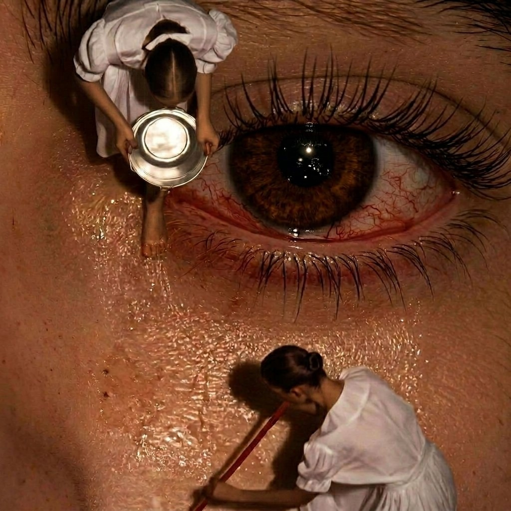

Experimental Web Art · AI · Interactive Storytelling

The following are AI-generated assets created in Runway as part of the production of this work.
An experimental web artwork exploring the cultural romanticization of melancholy and the ways sadness becomes intertwined with identity, self-image, and desire.
Drawing from internet culture, film, literature, and the visual language of the "sad girl," the project examines how sadness is often framed as beautiful, profound, artistic, and worthy of attention. Through surreal imagery and interactive storytelling, the work asks what happens when melancholy becomes something we perform, cultivate, and return to.
The project incorporates AI-generated imagery as both a creative and conceptual medium. These images serve as source material for a series of interactive web experiences, where they are fragmented, animated, manipulated, and recontextualized through web-based interactions. Rather than existing as static images, they become part of a larger digital environment that invites visitors to actively engage with themes of longing, nostalgia, repetition, and self-mythologization.
The images presented here are production stills from the project and represent visual elements that will appear throughout the final interactive work.
The full project will be released on Oral.pub later this month.